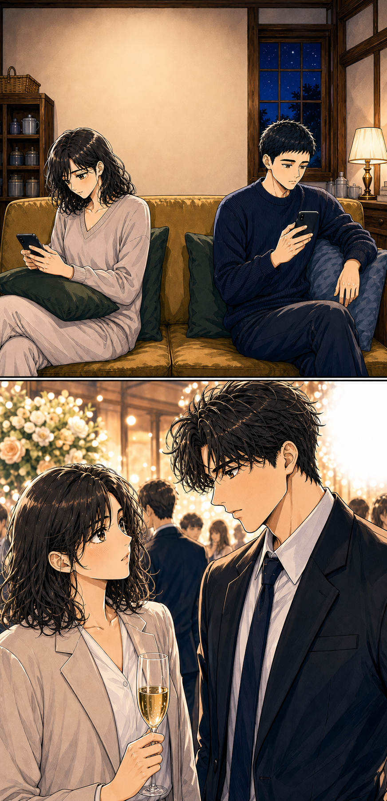
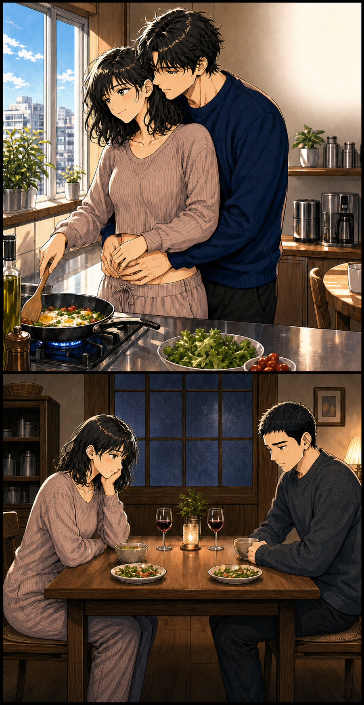
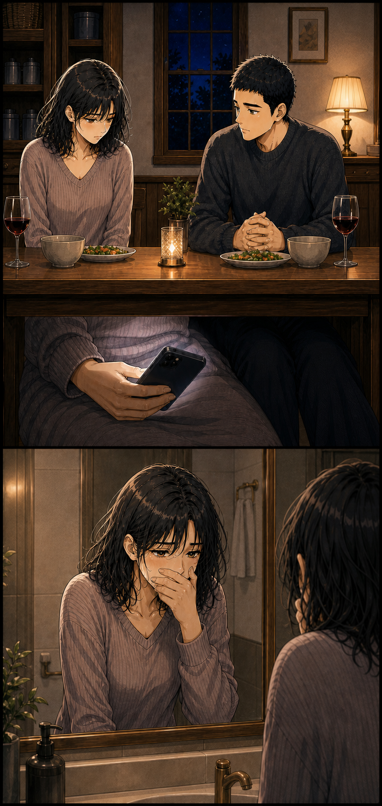
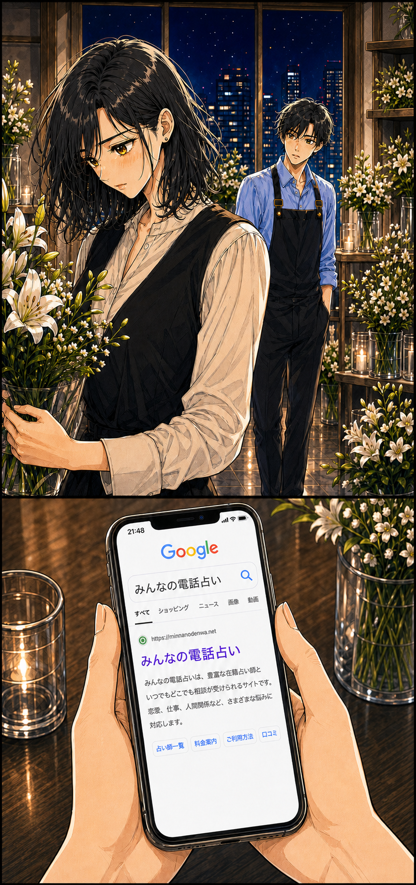
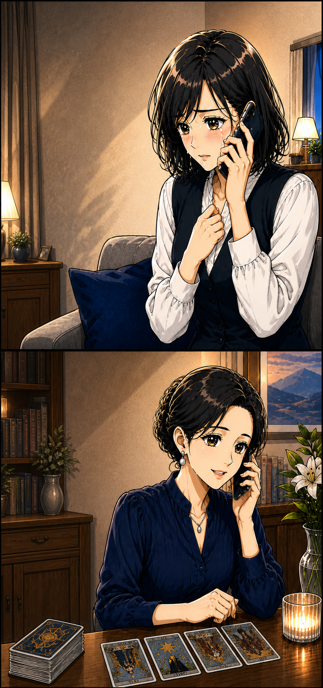
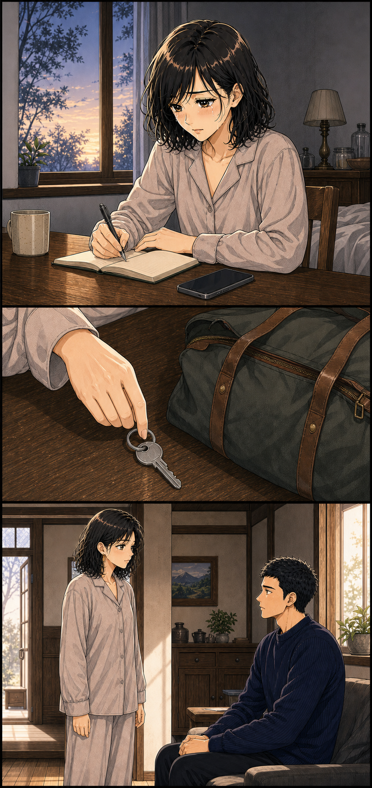
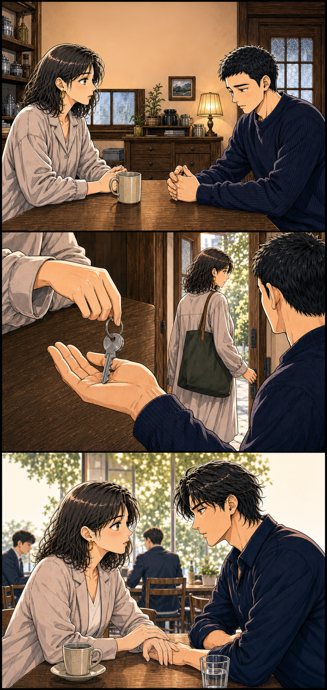
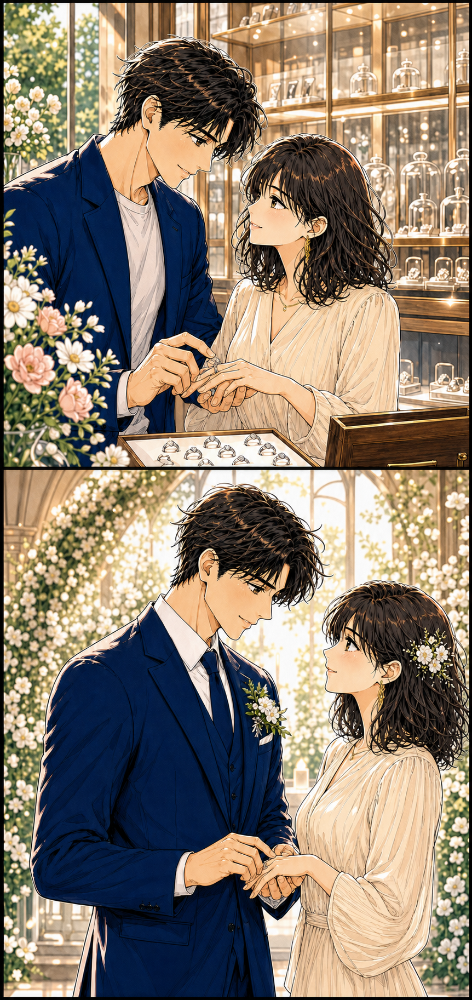

ある日の夜、23:48
帰る家はある。
でも、心は別の人へ。
そんなとき、まっすぐ気持ちを伝えてくれる年下の彼に出会った。嬉しいのに、罪悪感もある。美香は誰にも言えないまま、一人で答えを探していました。
美香が本当に知りたかったのは——
- 1年下の彼の言葉を、信じてもいいのか
- 27年の関係を終わらせるのは、間違いなのか
- 3自分はこれから、どんな毎日を生きたいのか
彼氏がいるのに、
年下の彼に惹かれてしまった。
これは、42歳の美香が「誰を選ぶか」ではなく、「どう生きたいか」に気づくまでの創作ストーリーです。

付き合って7年。同じ家にいても、二人の会話はとうに消えていた。
玲あ、今笑った。美香さん、そんなふうに笑うんですね。意外です。……かわいい
玲まだ残ってたんですか？ これ、どうぞ。まだ温かいですよ
美香え、私に？ ……ありがとう。ちょうど休みたかったの
玲よかった。あの、駅まで一緒に帰りませんか？
美香ねえ、その前に言っておかなきゃ。私、7年付き合ってる彼氏がいるの
玲……そうだったんですね。ごめんなさい。でも、好きになった気持ちまで、なかったことにはできないです
玲美香さん、こっち見て。嫌なら、本当にここで止めます。困らせたくないから
美香……もう、十分困ってるよ。でも、玲に会いたいって思ってる。だから……止めないで

玲……今日も、帰るんですよね。わかってるけど、本当はずっとここにいてほしい
帰る場所はあるのに、心から会いたい人がいるのはこの部屋だった。

彼ねえ、最近ずっと帰りが遅いよね。仕事、そんなに忙しいの？
美香うん……ごめん。ちょっとバタバタしてて。でも、それだけじゃなくて……
7年の思い出を裏切って、嘘までついて。私、最低だ。でも、ごまかすのももう限界だった。

彼を傷つけたくない。でも玲も失いたくない。こんなこと、誰にも言えない。

美香先生、変なことを聞いてもいいですか？ 私、どちらを選べば後悔しないのか、もう自分ではわからなくて……
先生変なことではありませんよ。でも、お二人がどう思うかの前に、美香さんはこれから、どんな毎日を生きたいですか？

嘘をつかずに、好きな人と未来の話をしたい。書いてみたら、答えはもう出ていた。
玲に選んでもらう前に、まず自分が嘘のない生活を選ぼう。
美香あのね、大事な話があるの。今までずっと逃げてたけど、今日はちゃんと話したい。聞いてくれる？

7年の思い出を否定せずに、終わった恋を、自分の言葉で終わらせた。
美香玲、あのね。私、もう会える夜だけの関係は嫌なの。玲と、これからの話がしたい
玲……言ってくれるの、待ってました。僕も美香さんとの未来を選びたい。もう、隠れなくていい恋にしたいです

玲美香さん。これからは、嬉しいことも不安なことも、全部一緒に話していきたい。僕と結婚してください
美香……うん。私も玲と、逃げずにちゃんと話しながら、一緒に生きていきたい
一人で暮らす時間を経て、二人は未来の話を重ねた。 42歳。やっと自分で未来を選んだ。
美香を動かしたのは、誰かに未来を決めてもらう言葉ではなかった。ずっと後回しにしていた、自分の本音だった。
私も、この恋で本音を我慢しすぎてる？※本作品は成人同士の恋愛と電話相談を題材にした創作ストーリーです。感じ方や結果には個人差があります。
LOVE TYPE CODE
私、我慢しすぎてる？
「我慢しすぎ恋」診断
10枚のカードから見えてくる、
あなたの恋の考え方と隠れた本音。
今の恋愛タイプを確かめてみませんか？
会える日や連絡のタイミングは、
いつも彼の都合で決まる
「もう少し待って」という言葉を、
長く信じ続けている
本当は寂しくても、彼には
「大丈夫」と答えてしまう
この関係について、友人や家族には
すべてを話せない
何度も離れようとしたのに、
連絡が来ると戻ってしまう
離れようと決めても、思い出すと
気持ちが揺れ戻ってしまう
二人の未来を想像すると、楽しみより
不安のほうが先に浮かぶ
待つべきか次へ進むべきか、
何度も同じところで迷う
自分の予定や希望より、つい
彼との時間を優先してしまう
伝えたい言葉を考えたのに、最後は
言わずに飲み込んでしまう
10の回答から4つの恋愛傾向を分析中。
あなたの恋愛コードを導いています……
10の回答から見えた、あなたの恋愛タイプは……
彼の言葉を信じて
待ちすぎタイプ
複雑な恋は、周囲に話しにくいぶん、一人で考え続けてしまいがちです。
電話占いは未来を決めてもらうだけでなく、彼のこと、自分のこと、これからの選択肢を言葉にして整理するためにも利用できます。
無料会員登録で
初回 3,000円OFF クーポン進呈美香の物語から見えたこと
欲しかったのは、誰かの正解より自分の本音を話せる時間。
美香は最初、「どちらを選べば幸せになれるか」を知りたいと思っていました。
でも、話しながら見えてきたのは、けんかも会話もない家へ帰る寂しさと、好きな人と将来の話ができない苦しさ。美香がもう続けたくないのは、「誰といるか」よりも、自分の気持ちを後回しにする毎日でした。
占いが未来を決めたわけではありません。言葉にしたことで、美香自身が「これからどう生きたいか」を選べるようになったのです。
※上記は40代女性の複雑恋愛を題材にした創作ストーリーです。
聞きたいことはメモでOK
彼の気持ち、二人のこれから、私が大切にしたいこと。
口コミを見ながら、話しやすそうな先生を選ぶ
複雑な恋愛や復縁を得意とする先生から探せました。
いきなり答えを決めなくていい
まずは話してみる。それくらいの気持ちで始めました。
ちょっと安心できたポイント
電話占いって少し不安。
でも、私にも使えそう。
いきなり申し込むのではなく、まずは気になることをちょっと調べてみました。運営元がちゃんとわかる
プライム市場上場グループが運営していると知って、少し安心できました。
悩みに合いそうな先生を探せる
復縁や相手の気持ちなど、得意な相談と口コミから選べます。
初めてなら、お得に試せる
無料会員登録で初回3,000円OFF。まずは先生と特典の内容を見てから決めてもよさそうです。
※別途通話料がかかります。クーポンの利用条件は公式サイトでご確認ください。
話す前のちょっとした準備
話す前に、これだけメモしておくと安心
- 1
聞きたいことをメモする
いちばん知りたいことから順番をつけます。
- 2
先生の得意分野を見る
自分の悩みに近い相談内容や口コミに目を通します。
- 3
今日はここまでと決める
話したい範囲を先に決めておくと安心です。
申し込む前に気になったこと
気になることは、先に調べておきました。
初回特典はどう使う？
特典ごとに使える条件や期限が違うので、先に公式サイトを見ておくと安心です。
先生はどう選ぶ？
復縁などの得意分野と口コミを見て、「話しやすそう」と思える先生から探せます。
相談内容を周囲に知られない？
個人情報の扱いは公式サイトに載っています。気になるときは、先に目を通しておくと安心です。
結果は必ず当たる？
必ず当たるものではありません。未来を決めてもらうのではなく、気持ちを整理するきっかけとして考えています。
何を話せばいいか不安
今の状況と聞きたいことを簡単にメモしておくと、話し始めやすくなります。
ここまで読んだ私へ
今すぐ答えを出さなくても大丈夫。まずは、どんな先生がいるか見てみることにしました。